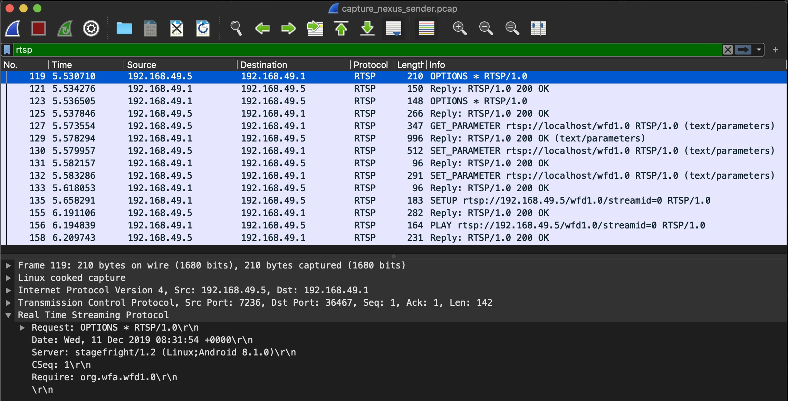
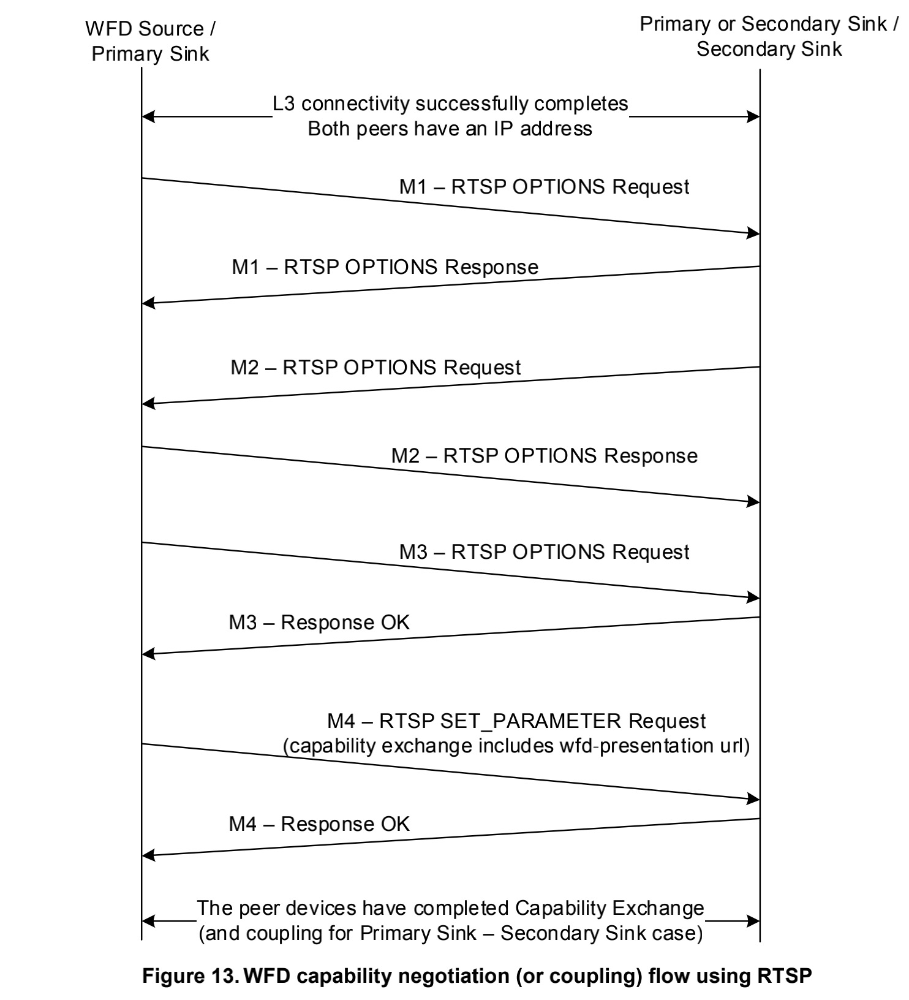
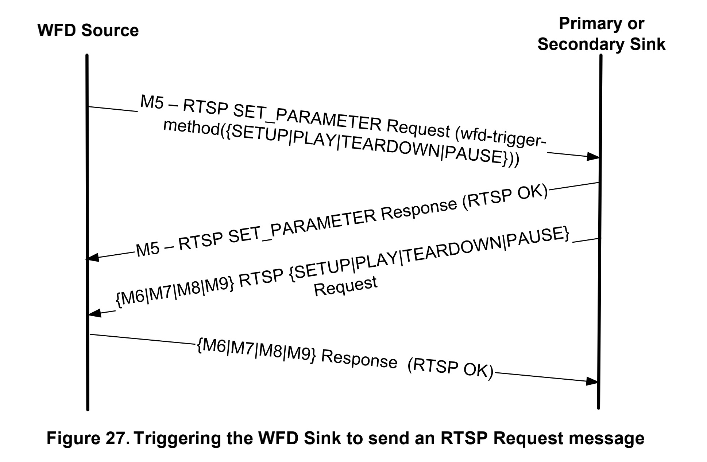
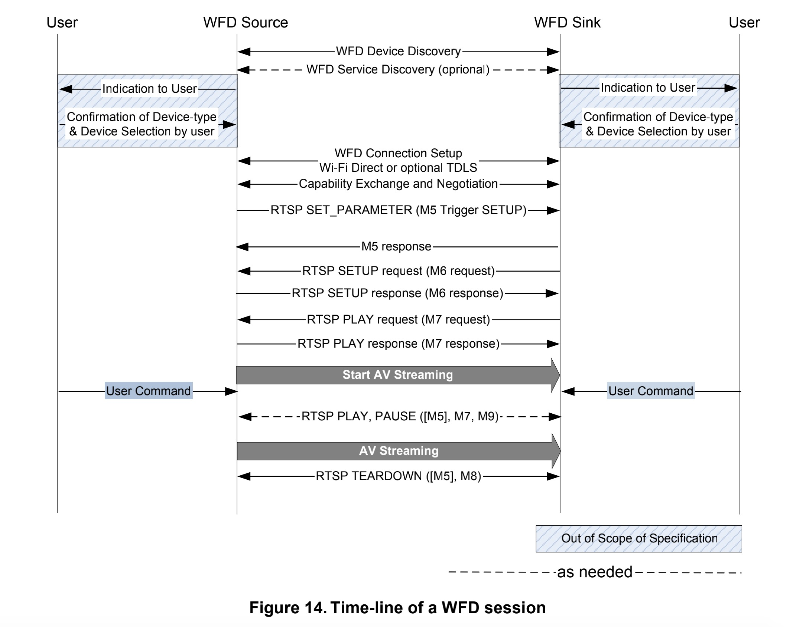

RTSP概述
在上一篇博客中我们已经通过Wi-Fi P2P建立好了Source和Sink端的TCP连接，在Miracast后续的音视频传输过程中，将采用RTSP协议来对流媒体进行控制。因此接下来的步骤就到了RTSP协商、会话建立及流媒体传输的阶段。首先，什么是RTSP协议呢？
实时流协议（Real Time Streaming Protocol，RTSP）是一种网络应用协议，专为娱乐和通信系统的使用，以控制流媒体服务器。该协议用于创建和控制终端之间的媒体会话。媒体服务器的客户端发布VCR命令，例如播放，录制和暂停，以便于实时控制从服务器到客户端（视频点播）或从客户端到服务器（语音录音）的媒体流。
流数据本身的传输不是RTSP的任务。大多数RTSP服务器使用实时传输协议（RTP）和实时传输控制协议（RTCP）结合媒体流传输。关于流媒体传输用到的协议与过程，我们将会在下一篇博客中进行详解。
抓包准备
要分析RTSP的指令协商过程，最好的方法就是抓取TCP的数据包，并进行分析。Android上可以采用tcpdump工具抓取TCP的包，然后通过Wireshark工具导入进行分析。具体的工具使用不在这里介绍，大家可自行查找。最终抓取到的数据包如下图所示，通过Wireshark的过滤功能我们可以很方便的过滤RTSP协议的数据包：

WFD能力协商（Capability Negotiation）
在Source和Sink端的TCP连接成功建立之后，会马上进入到RTSP能力协商的阶段，主要涉及到RTSP M1-M4指令，双方将按照以下顺序发送与处理消息。

RTSP M1 Messages
由Source端发起一个RTSP OPTIONS M1请求，以确认Sink端所支持的RTSP方法请求。Request和Response如下所示：
Request(Source -> Sink)
1 | OPTIONS * RTSP/1.0\r\n |
Response(Sink -> Source)
1 | RTSP/1.0 200 OK\r\n |
RTSP M2 Messages
在Sink回复完M1指令后，会由Sink端发起一个RTSP OPTIONS M2请求，以确认Source端所支持的RTSP方法请求。Request和Response如下所示：
Request(Sink -> Source)
1 | OPTIONS * RTSP/1.0\r\n |
Response(Source -> Sink)
1 | RTSP/1.0 200 OK\r\n |
RTSP M3 Messages
在Source端回复完M2指令后，会由Source端发起GET_PARAMETER M3请求，以查询Sink端的属性以及能力，所查询的属性列表在请求最后。
Request(Source -> Sink)
1 | GET_PARAMETER rtsp://localhost/wfd1.0 RTSP/1.0\r\n |
Sink端回复M3指令，告诉Source端自身支持的属性及能力，比较重要的几个属性：RTP端口号wfd_client_rtp_ports（传输流媒体用）、所支持的audio及video编解码格式wfd_audio_codecs，wfd_video_formats等…
Response(Sink -> Source)
1 | RTSP/1.0 200 OK\r\n |
RTSP M4 Messages
基于Sink端回复的M3指令，将由Source端发起SET_PARAMETER M4指令，以最终设置此次会话里的最佳参数集（收发双方都支持的编解码器类型等等）
Request(Source -> Sink)
1 | SET_PARAMETER rtsp://localhost/wfd1.0 RTSP/1.0\r\n |
Response(Sink -> Source)
1 | RTSP/1.0 200 OK\r\n |
WFD会话建立（Session Establishment）
在Sink回复完M4指令后，能力协商的过程就结束了，下一步则是WFD会话建立过程，主要涉及到RTSP M5-M7指令。双方将按照以下顺序发送与处理消息。

RTSP M5 Messages
由Source端发起SET_PARAMETER M5请求，通过wfd_trigger_method参数触发Sink端向Source端进行SETUP、PLAY、PAUSE、TEARDOWN等请求。如下M5 Request中设置了SETUP触发请求。
Request(Source -> Sink)
1 | SET_PARAMETER rtsp://localhost/wfd1.0 RTSP/1.0\r\n |
Sink端则正常回复，表示自己已经收到SETUP触发请求即可。
Response(Sink -> Source)
1 | RTSP/1.0 200 OK\r\n |
RTSP M6 Messages
上面说到了M5 Request中设置了SETUP触发请求，则此时应该由Sink端主动发送SETUP M6请求：
Request(Sink -> Source)
1 | SETUP rtsp://192.168.49.5/wfd1.0/streamid=0 RTSP/1.0\r\n |
此时Source端将完成RTSP会话的创建，并返回Session ID：
Response(Source -> Sink)
1 | RTSP/1.0 200 OK\r\n |
RTSP M7 Messages
经过M6指令交互后，RTSP会话已经完成创建。此时将由Sink端发送PLAY M7请求，告诉发送端可以开始发送流媒体数据了：
Request(Sink -> Source)
1 | PLAY rtsp://192.168.49.5/wfd1.0/streamid=0 RTSP/1.0\r\n |
Source端回复M7指令，并且状态是200 OK时，WFD Session成功建立。
Response(Source -> Sink)
1 | RTSP/1.0 200 OK\r\n |
经过以上M1-M7的指令交互，且成功创建WFD会话后，Source与Sink端的协商及会话过程已完成。这个时候Source端会按照Sink指定的UDP端口发送RTP数据包，包含音视频数据。
WFD长连接（keep-alive）
WFD内的长连接机制主要是为了确保WFD会话处于正常的状态，有点类似于TCP长连接的心跳机制，若超时，则Source或Sink端应该断开相关的RTSP与RTP连接。根据官方文档的介绍，我们需要注意以下几点：
超时的设置：Source端可以在M6的Reponse中设置
timeout参数，以指定超时时间，格式详见上述M6 ResponseSource端需要定期发送M16指令
Sink端在收到M16指令后要马上进行回复
若Source端在指定的超时时间内未收到至少一条M16响应消息，则Source端会主动断开RTSP与RTP连接
若Sink端在指定的超时时间内未收到至少一条M16请求消息，则Sink端应该主动断开RTSP与RTP连接
默认超时时间为60秒，如果需要自己指定，则值应该>10秒
因此，作为Sink端，我们在收到M16指令后，需要马上进行回复，否则可能面临连接断开的风险。而且，当达到一定的超时时间后没有收到Source端的M16请求，我们也应该主动断开连接，超时时间可以通过timeout属性获取。（刚开始写demo的时候就是忘了这一步，导致连接过一段时间就会断掉，看了官方文档后才发现超时这个问题）
RTSP M16 Messages
M16请求由Source端发起，此消息为一个空的GET_PARAMETER请求
Request(Source -> Sink)
1 | GET_PARAMETER rtsp://localhost/wfd1.0 RTSP/1.0\r\n |
Sink端收到后进行200 OK回复即可
Response(Sink -> Source)
1 | RTSP/1.0 200 OK\r\n |
关闭会话
在RTSP M5 Messages这一节中，我们谈到会由Source端发起SET_PARAMETER M5请求，触发Sink端发送TEARDOWN请求。该请求可以使得Source与Sink端的RTSP及RTP连接断开。
RTSP M8 Messages
- 场景1：Source端主动关闭会话：
首先会由Source发送M5请求，并且wfd_trigger_method的值为TEARDOWN，触发Sink端发送TEARDOWN M8指令：
- 场景2：Sink端主动关闭会话：
Sink端直接发送TEARDOWN M8指令
Request(Sink -> Source)
1 | TEARDOWN rtsp://192.168.49.5/wfd1.0/streamid=0 RTSP/1.0\r\n |
Response(Source -> Sink)
1 | RTSP/1.0 200 OK\r\n |
总结
针对Miracast RTSP协商、会话建立及流媒体传输，我们来进行一下总结。
- 在Source和Sink端的TCP连接成功建立之后，会马上进入到RTSP能力协商的阶段，主要涉及到
M1-M4指令 - 能力协商的过程结束后，下一步则是WFD会话建立过程，主要涉及到
M5-M7指令 - WFD会话成功建立后，将由Source端通过UDP连接发送RTP音视频数据包
- 通过
PAUSE、PLAY、TEARDOWN等指令控制音视频流暂停、播放、关闭 - 通过
M16指令来维持WFD长连接，确保会话处于正常的状态
我们可以使用下图来对整个WFD会话的生命周期进行总结：

参考
Wi-Fi_Display_Technical_Specification_v2.1_0.pdf
- 4.6 WFD Capability Negotiation
- 4.8 WFD session establishment
- 6.4 RTSP Messages
- 6.5.1 WFD keep-alive